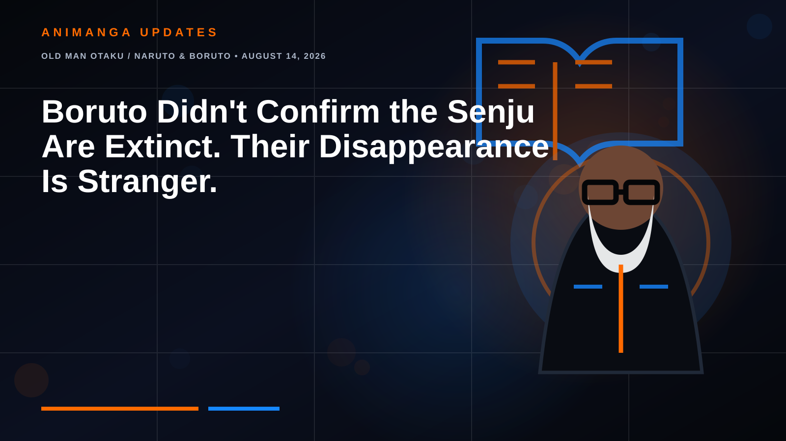

OLD MAN OTAKU / NARUTO & BORUTO • AUGUST 14, 2026
Boruto Didn't Confirm the Senju Are Extinct. Their Disappearance Is Stranger.
One of Konoha's two founding clans has almost vanished from the modern story. That is real. An official extinction announcement is not.

A headline making the rounds says Boruto has finally confirmed the end of Konoha's Senju Clan. It is a dramatic idea: the family of Hashirama and Tobirama, once powerful enough to stand toe-to-toe with the Uchiha, quietly reaches the end of its bloodline in the era of Boruto: Two Blue Vortex.
There is just one problem. The manga has not actually declared the Senju extinct.
What Boruto has done is arguably more interesting. It has carried the Naruto world far enough into the future that the Senju are no longer visible as an active clan at all. No Senju compound. No new generation wearing the name. No identifiable clan head. No prominent Senju shinobi standing beside the Naras, Akimichis, Hyuga or surviving Uchiha.
The clan that helped create Konoha has effectively disappeared from Konoha's present.
What the Senju Actually Built
The Senju were not simply another famous ninja family. In the Warring States era, they were one of the two dominant powers locked in generational conflict with the Uchiha. Hashirama Senju and Madara Uchiha eventually broke that cycle long enough to form an alliance, and together their clans founded the Hidden Leaf Village.
Hashirama became the First Hokage. His younger brother Tobirama became the Second, helping turn the village from an ideal into a functioning institution. The official Naruto site still describes Hashirama as the founder who helped establish the hidden-village system, while Tobirama's political and technical legacy includes major village structures and techniques that continued influencing shinobi generations later.
In other words, Konoha is not merely a place where the Senju once lived. Konoha itself is part of the Senju legacy.
Then Where Did Everybody Go?
Naruto never gives us a single "fall of the Senju" event comparable to the Uchiha massacre. There is no canonical chapter where the clan is wiped out. There is no announced plague, purge or final battle that removes them from history.
Instead, the family fades.
By Naruto's generation, the clearest living descendants of Hashirama's family are Tsunade and her younger brother Nawaki. Nawaki dies during wartime as a child. Tsunade survives, becomes one of the Legendary Three and later the Fifth Hokage, but she has no known children.
The official Naruto site explicitly identifies Tsunade as Hashirama's granddaughter. That makes her a direct surviving branch of the First Hokage's family, but the series has never stated that she is the only living person with Senju ancestry.
That distinction matters.
Clan Name vs. Clan Bloodline
There are at least three different claims people tend to blend together:
1. There are no major modern characters using the Senju name.
That is effectively true in the current story.
2. The Senju no longer exist as an organized political clan inside Konoha.
The story strongly suggests this, because no functioning Senju household or institution has been shown for generations.
3. Every person descended from the Senju is dead.
That has never been confirmed.
A clan can disappear as a social identity without every descendant disappearing genetically. Families marry into other families. Surnames change. Branches stop using an old clan name. Descendants can survive without operating as a formal house.
Naruto has never given us the missing genealogical map required to turn that possibility into confirmed canon, but it has also never closed the door.
Tsunade Is the Last Major Link We Can Actually Name
This is where the viral headline is closest to something genuinely fascinating.
Tsunade is currently the last clearly established living character who directly connects Konoha's modern era to Hashirama's immediate Senju family. She carries the bloodline of the village's First Hokage, became Hokage herself and lived long enough to see the shinobi system move into the age that eventually produces Boruto.
But "last clearly established major link" is not the same sentence as "last Senju alive."
The series simply has not introduced another named Senju descendant with comparable prominence.
The Uchiha Comparison Makes It Feel Even Stranger
The Uchiha suffered an explicit catastrophe, yet their legacy remains one of the most visible bloodlines in the sequel. Sasuke survives. Sarada inherits the name and Sharingan. The history of the clan remains central to the larger narrative.
The Senju experienced no equivalent on-page extermination, yet their name is almost absent.
That reversal is fascinating. One founding clan was nearly destroyed in a documented massacre but remains narratively visible. The other helped build the village, apparently survived its early wars, and then gradually dissolved into history.
Did the Senju Become Konoha?
There is a popular interpretation that fits Hashirama's philosophy even if the manga has never provided a neat exposition box confirming it: the Senju may have gradually integrated into the village rather than preserving themselves as an isolated bloodline-first institution.
Hashirama's dream was always larger than his clan. He wanted a system where children would not have to die fighting another family simply because of the name they were born with.
If later Senju generations increasingly married outside the clan and identified themselves primarily as citizens of Konoha, then the disappearance of the Senju name would carry an almost poetic irony.
The clan might not have been destroyed by Konoha. It may have succeeded so completely that it dissolved into Konoha.
That remains interpretation, not confirmed history, but it fits the strange evidence better than pretending Two Blue Vortex just announced a clan extinction.
Could Two Blue Vortex Bring the Senju Back?
Absolutely. Because the story has never definitively closed the bloodline, a future reveal could introduce a Senju descendant without contradicting a canonical extinction statement.
It would also be thematically useful. Two Blue Vortex is already a story obsessed with inherited identities, rewritten memories, old techniques returning in new forms and a younger generation carrying legacies it did not choose.
A modern Senju character would give the sequel a direct way to ask what one of Konoha's founding families means in a village that barely remembers it as a living clan.
The Old Man Otaku Take
The headline "Boruto confirms the Senju are extinct" is cleaner than the truth, but the truth is better.
Boruto has not confirmed the death of the Senju bloodline. It has exposed the disappearance of the Senju identity.
For a clan that once defined the balance of power in the shinobi world, that quiet fade may be more haunting than a dramatic final battle. Hashirama won the village he dreamed about. Tobirama helped build its systems. Tsunade eventually led it.
And generations later, Konoha is still here.
The Senju name barely is.
RogueVerse verdict: The Senju Clan is functionally absent from modern Konoha, but canon has not confirmed that every Senju descendant is dead or that Tsunade is literally the final living member.